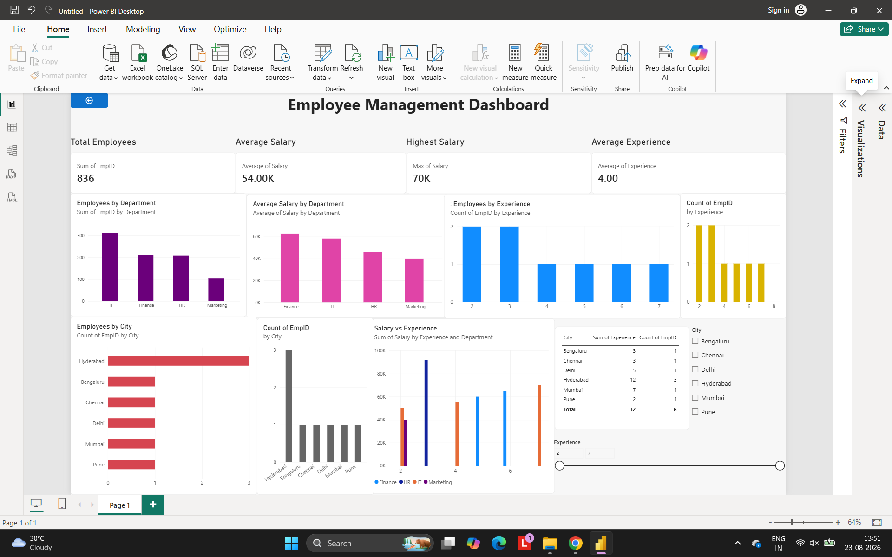

PROJECT 06
Employee Management SQL
A MySQL-based employee management project demonstrating database design, SQL queries, filtering, aggregation, sorting and relational joins.
PROJECT PREVIEW

ABOUT THE PROJECT
Employee data into structured analysis.
Developed a SQL-based Employee Management System using MySQL Workbench.
The project demonstrates how employee information can be stored, managed, filtered and analyzed using relational database concepts.
SQL queries were used for filtering, sorting, aggregation, grouping and joining data across relational tables.
KEY FEATURES
Database Design
Created relational tables for structured employee information.
SQL Queries
Used SELECT, WHERE, ORDER BY and filtering operations.
Aggregation
Used aggregate functions and GROUP BY for data analysis.
JOIN Operations
Practiced INNER JOIN, LEFT JOIN and RIGHT JOIN operations.
TOOLS & TECHNIQUES
BACK TO PROJECTS
View All Projects →